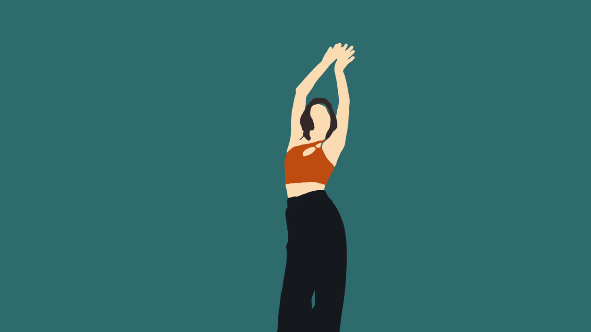

Rotoscope Animation
Frame-by-frame animation for detailed motion and stylized effects.
Rotoscope Tools
Streamline your animation workflow with specialized tools
Roto Brush Tool
The Roto Brush intelligently tracks edges while you paint, creating accurate mattes with minimal manual keyframing. Its adaptive algorithm preserves soft edges and fine details for clean compositing.
Key Features:
- AI-assisted edge detection
- Pressure-sensitive brush controls
- Temporal propagation of strokes
- Interactive refinement tools
Freeze Propagation
Locks Roto Brush strokes to prevent automatic updates across frames, giving manual control over edge refinement.
Key Features:
- Edge Stability
- Blue Timeline Bar
- Manual Adjustments
- Improved Accuracy
Solid Layer
Creates a flat color layer used as a background, matte, or base for effects and compositions.
Key Features:
- Custom Size & Color
- Layer Flexibility
- Non-Destructive
- Easy Integration
Rotoscope Comparison
See my rotoscope work alongside the original reference footage
My Rotoscope Work
Frame-by-frame tracing done using After Effects Roto Brush tool with manual refinements.
- Total frames: 1800 Frames
- Time taken: 12 Weeks | 150 Frames Per Week
- Rotoscope Duration: 1 Minute
Original Reference
Source footage used for the rotoscope project.
- Resolution: 4K
- FPS: 30
- Source: Jungle - Back On 74 / Shay Latukolan Choreographer | KEIKO DANCE COVER
Rotoscope Milestone
